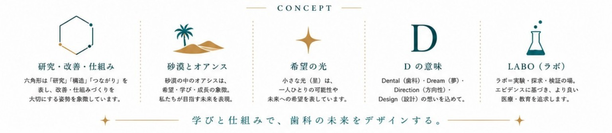

Concept
学びと仕組みで、歯科の未来をデザインする。
TOPでは詳しく語りすぎず、DesertLABOが大切にする5つの概念を静かに示します。
研究・改善・仕組み
六角形は、研究・構造・つながりを表します。
砂漠とオアシス
迷いの中に、希望・学び・成長の象徴を。
希望の光
小さな光は、一人ひとりの可能性と未来への希望。
Dの意味
Dental・Dream・Direction・Designの想いを込めて。
LABO
実験・探求・検証の場。より良い教育を追求します。

Projects
現在のプロジェクト
Activity / History
活動履歴
2026.6
砂漠のDH塾 活動開始DesertLABOの最初のプロジェクトとして、学びの場づくりを開始。
2026.7
DesertLABO ホームページ公開ブランドの思想と活動を伝える公式サイトを公開。

代表紹介はABOUTページの最後に控えめに掲載しています。
Contact
お問い合わせ
セミナー、スタディグループ、その他のお問い合わせはこちらから。
DesertLABO事務局
desertlabo.office@gmail.com
砂漠のDH塾 Instagram
@sabaku_dh_juku